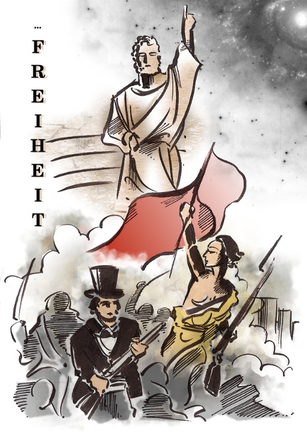
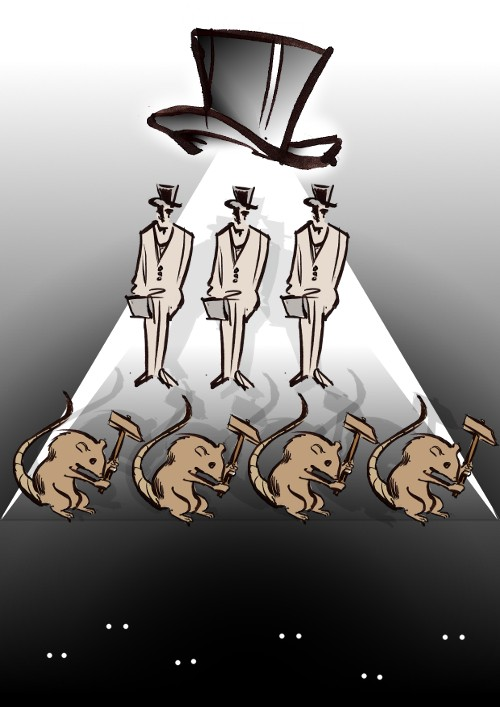
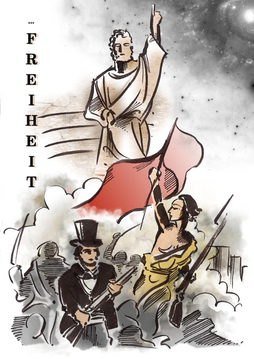
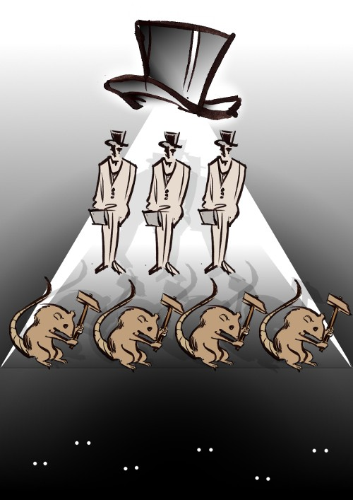

Hannah Arendt (1906-1975) widmet sich in ihrem philosophischen Werk „Vita activa – Vom tätigen Leben“ – wie der
Titel andeutet – dem tätigen Leben, oder der scheinbar einfachen Frage: was tun wir, wenn wir tätig sind? Wie so
oft, überdeckt die Selbstverständlichkeit alltäglichen Handelns die tieferen Zusammenhänge, die unser Leben
bestimmen. Um uns zu sensibilisieren für verloren gegangene Dimensionen unserer Alltagswelt, stellt Hannah Arendt
die Frage, wie sich bestimmte Grundkategorien des Lebens: Arbeit, Herstellen und Handeln, im Verhältnis zueinander
und in ihrer Bedeutung gewandelt haben, beginnend in der Antike. Die griechische Antike zeichnet sich diesbezüglich
durch ein besonderes Verhältnis zur Ewigkeit und – im politischen Sinne noch wichtiger – zur Unsterblichkeit aus.
Denn während die Suche nach ewigen Wahrheiten zu politischer Enthaltsamkeit und Abwendung von der Welt verführt, ist
das Streben nach Unsterblichkeit ein zutiefst politischer Drang, in dem Sinne, dass es zur Tat drängt: einer Tat,
deren Wirkung das eigene Leben überdauert. (vgl. S. 28ff, Vita Activa (im folgenden: VA))
„Ohne dies
Übersteigen in eine mögliche irdische Unsterblichkeit kann es im Ernst weder Politik noch eine gemeinsame Welt
noch eine Öffentlichkeit geben.“ (S. 68, VA)
 


